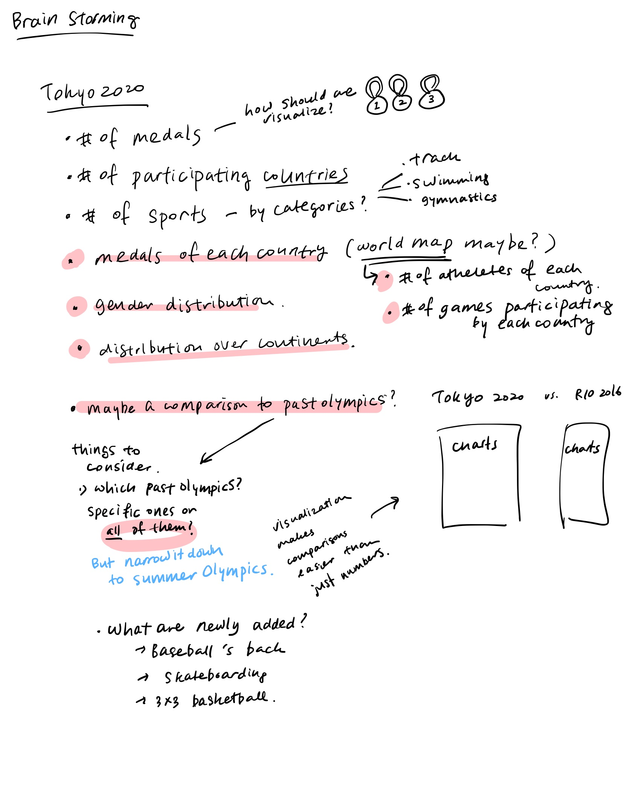
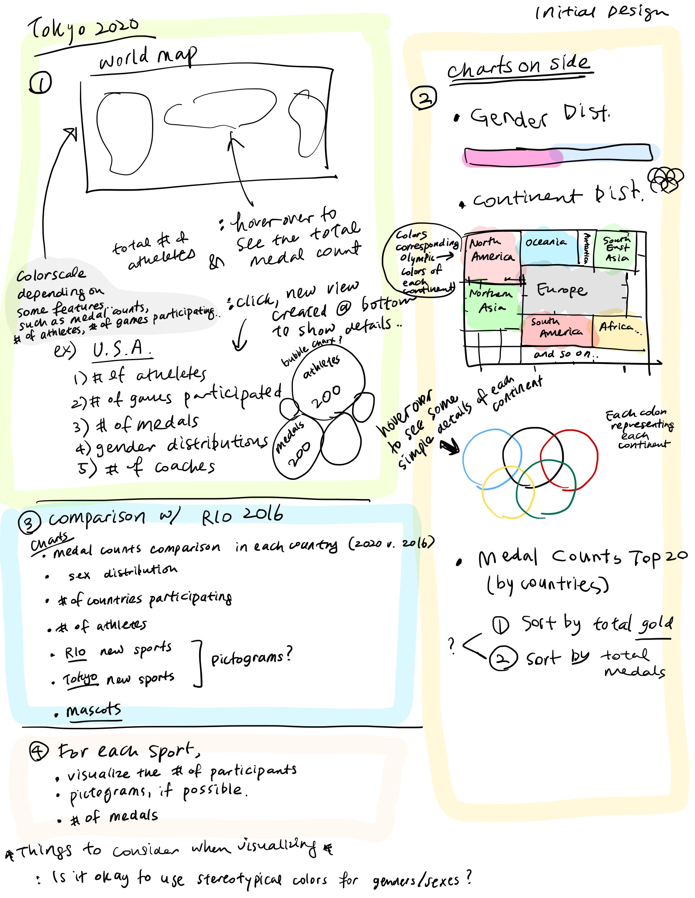
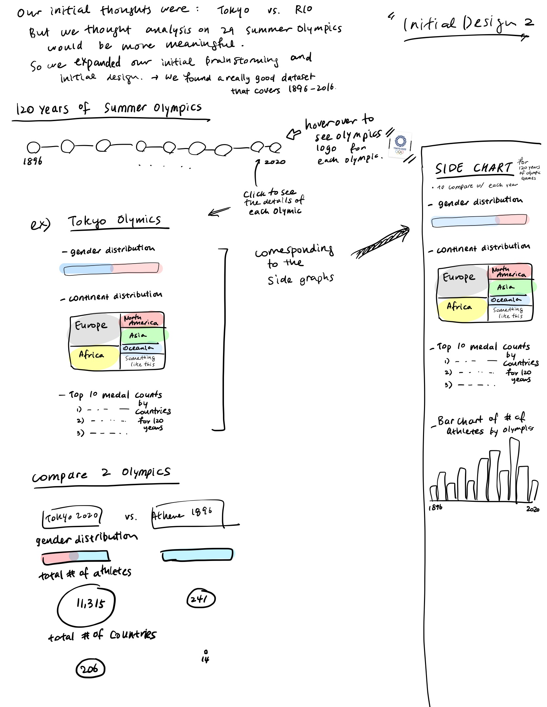
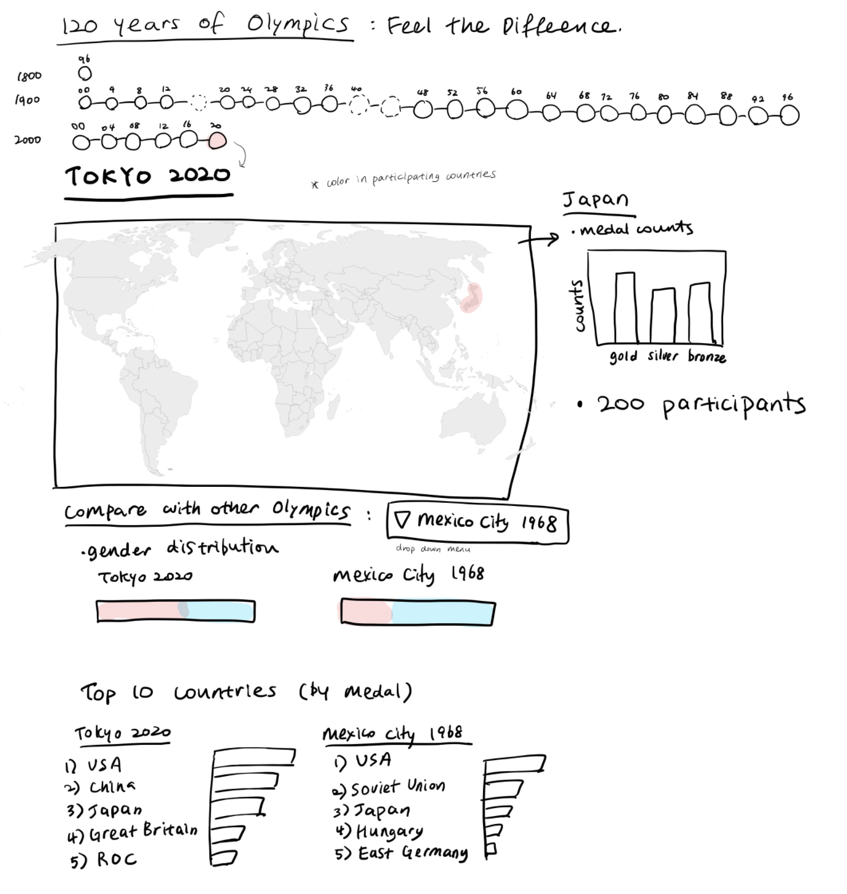
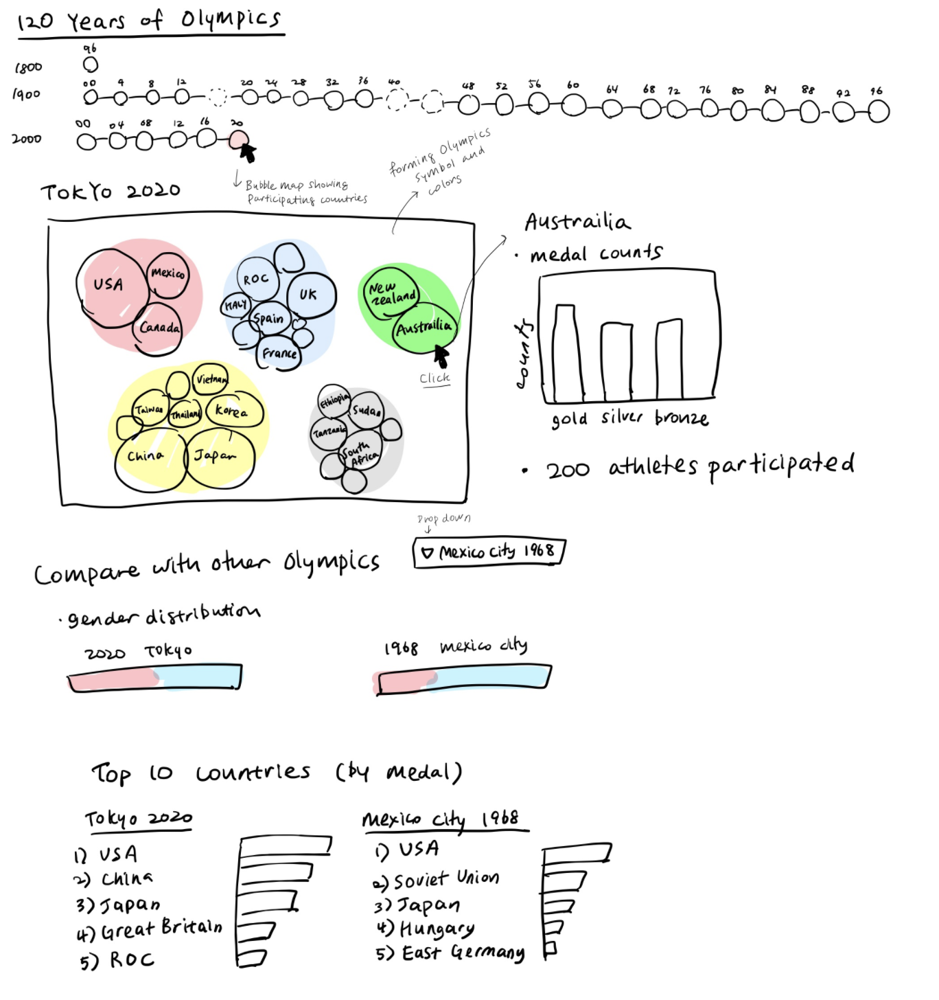

Brain Storming Sheet
We first wrote down some stuffs that could be visualized in our project. Then we narrowed it down/filtered it out with pink highlights to find what we really want to focus on. The blue letters were written during filtering out process.
First Design
We first focused on Tokyo 2020 specifically
Second Design
As written in the image, we decided to be more general. Our target data is now summer Olympics for last 120 years.
Third Design
We developed the idea with more charts so that we could visualize some important data.
Fourth Design
As we looked into the data, we figured out some of the countries back in 1896, 1968 and many other past years could not be represented in current world map. We decided to use bubble chart instead of the world map. The bubble charts group countries by continents. The size of each bubble is the number of athletes in each country. The colors of groups are the color of Olympic Rings
Wire Frame of the Final Design
This is the polished version of the final design. Click the link to see in pdf format Wire frame of final design